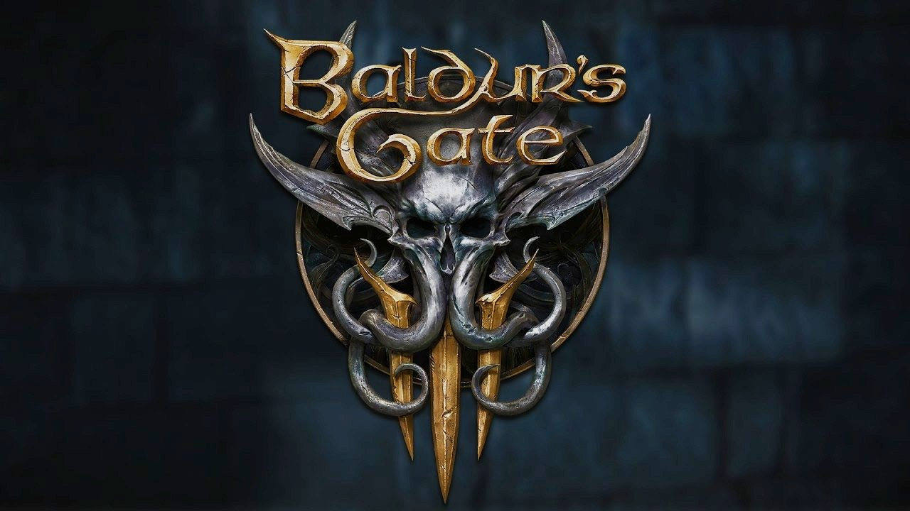

- Year: 2023
- Genre: RPG, Strategy
- Developer: Larian Studios
- Platforms: PC, PlayStation 5, Xbox Series X/S
- Awards: Game of the Year (GOTY) 2023
About the Game
Baldur's Gate 3 is a role-playing game developed by Larian Studios. Set in the Dungeons & Dragons universe, players make impactful choices that shape the fate of their party and the world.
Key Features
- Deep Role-Playing: Create and customize your character with a wide range of options.
- Branching Story: A narrative that adapts to your choices and actions.
- Turn-Based Combat: Strategic, turn-based combat inspired by Dungeons & Dragons.
- Multiplayer: Cooperative multiplayer for up to four players.
- Visuals and Sound: Stunning visuals and a powerful soundtrack enhance the experience.
Why It Won GOTY 2023
- Narrative Depth: The game's storytelling was praised for its complexity and player agency.
- Technical Achievement: The game's visuals, world design, and performance were widely acclaimed.
- Cultural Impact: Baldur's Gate 3 became a cultural phenomenon, inspiring countless discussions and theories.
- Critical Acclaim: The game received universal praise and numerous awards.
- Legacy: Baldur's Gate 3 is considered one of the greatest RPGs of all time.